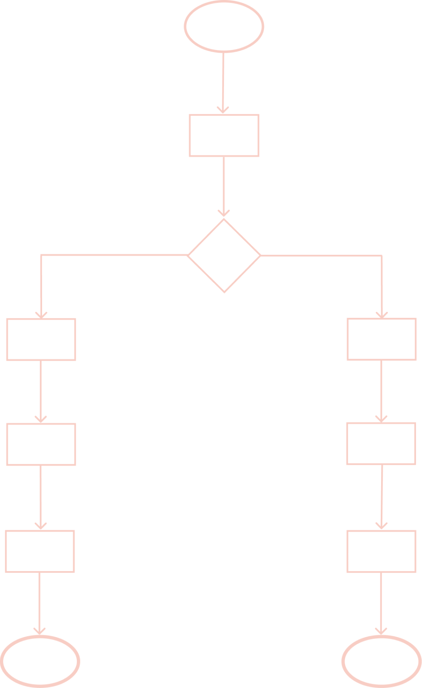
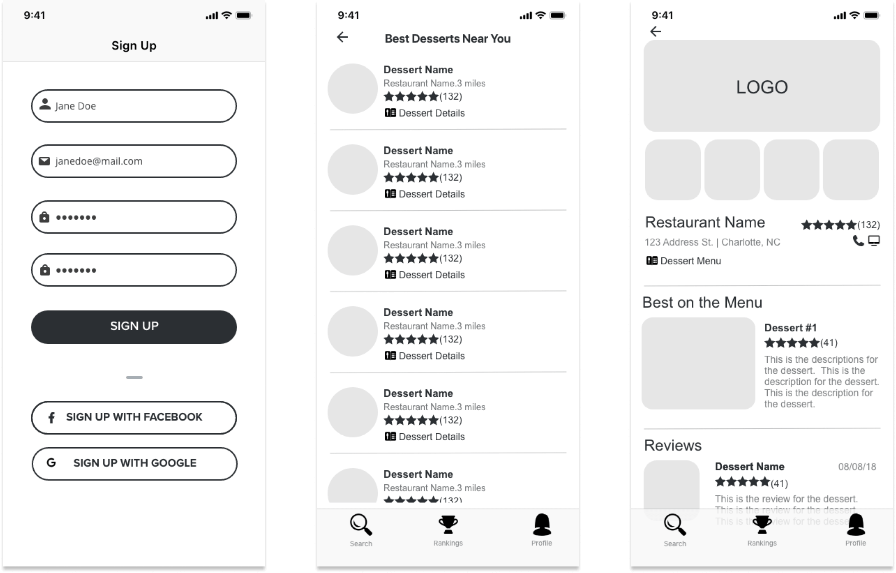
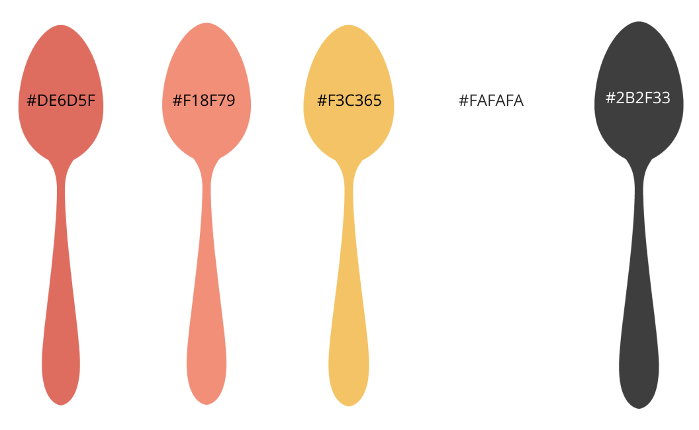
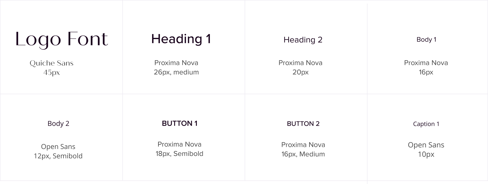

Design Roles
- UX Research & Design
- Branding
- Visual Design
Craving Quick Search and Dessert Profile
These results were created after extensive research, development, and revisions. The project goals were met by creating a restaurant dessert locating and reviewing application that allows users to find places to grab something sweet in their area or to find the type of dessert they are hankering for in a breeze. Known as CRAVING, this app never lets a sweet tooth go unsatisfied.
Craving Quick Search and Dessert Profile
These results were created after extensive research, development, and revisions. The project goals were met by creating a restaurant dessert locating and reviewing application that allows users to find places to grab something sweet in their area or to find the type of dessert they are hankering for in a breeze. Known as CRAVING, this app never lets a sweet tooth go unsatisfied.
Sample Questions from Survey
A Google Forms conditional logic survey was conducted to learn more about how consumers view restaurant desserts, user preferences, and habits as well as desired features of a new app. The critical survey takeways are listed below:
A Google Forms conditional logic survey was conducted to learn more about how consumers view restaurant desserts, user preferences, and habits as well as desired features of a new app. The critical survey takeways are listed below:
Sample Questions from Survey
A competitive analysis was also conducted on Yelp, Zomato, and Zagat to find holes in the market. Both features and design aesthetic were analyzed to determine what a new product shoud be like. The takeaways are listed below:
A competitive analysis was also conducted on Yelp, Zomato, and Zagat to find holes in the market. Both features and design aesthetic were analyzed to determine what a new product shoud be like. The takeaways are listed below:
35|Columbus, OH|Female
Despite living in Columbus for awhile, she doesn't know who serves a delightful dessert menu. Her favorite places seem to have lackluster options. She would love an app that could tell her what desserts are offered and to read reviews so she can try the best items in the market.
She is over not having a way to search for restaurants that serve dessert in her area and once she finds a place she has to settle for mediocre desserts.
22|Chapel Hill, NC|Male
There are times that Fred would love to satisfy his sweet tooth with something nicer than place and bake cookies. He would love an app that has trusty reviews of restaurant desserts offered in his area so that he won't waste his limited funds on something that isn’t great.
Restaurant desserts can be expensive and often not that great. He is sick of buying cheaper options at the grocery store that he knows he will like.
28|Los Angeles, CA|Female
She doesn't get a cheat meal often, but when she does, she wants to enjoy every bite! It bothers her when she tries unhealthy options in her days off that don't satisfy her taste buds. She would love to be reassured that her dessert splurges are supported by other's reviews.
She is sick of wasting her cheat meals on desserts that are not very good. She loves apple pie but never knows where the best one is served.
CRAVING’s main features were determined to be the following listed below. User Stories were created to list the full scope of features for the app.
The main features were then converted to user flows in Figma to illustrate how the user would interact with the platform to accomplish those goals. A user flow example is is shown to the right.
Learning More From Search Results
CRAVING’s main features were determined to be the following listed below. User Stories were created to list the full scope of features for the app.
The main features were then converted to user flows in Figma to illustrate how the user would interact with the platform to accomplish those goals. A user flow example is is shown to the right.
Learning More From Search Results
Once the features and flows were determined pen and paper sketches were created, for all the applicable screens. Knowing that the searching and ranking features were the essential functions of the app, I gave them their own tabs in the navigation. I thought it was also essential to have a profile or settings tab for the user to manage their account. I the created sketches with this framework in mind. The sketches were then turned into wireframes using Adobe XD.
Wireframes of Sign Up Page, Search Result List, and Restaurant Profile (Left to Right)
My first goal was to select a name. The whole point of the app is to find restaurants that serve something you are craving or to search for that specific dish directly. When you have a craving it only makes sense you turn to an app that has that name.
A branding style guide was created as a resource for this project. It details the brand identity, logos, submarks, typography, color palette, and more. Overall, I was looking to create a simple and clean UX, that was bright, joyful and enticing to the users. Capturing the feeling of wide eyes in a candy shop or bakery but in the app.
VIEW STYLEGUIDEI wanted the brand to have a happy, bright and sweet as sugar feel. I created this mood board to set a clear direction for the branding. This lead to determing the typography, color pallette, official logo, and brand accents.
I wanted the brand to have a happy, bright and sweet as sugar feel. I created this mood board to set a clear direction for the branding. This lead to determing the typography, color pallette, official logo, and brand accents.
I next brainstormed some ideas for the logo by creating pen and paper sketches. I went on to create as many of those as possible in Figma. The challenge I faced was creating a logo around the concept of a craving, which is a feeling. It isn't a concrete item, so there isn’t a symbol that represents it.
I designed several solid digital versions, some that weren’t initial sketches, and went on to test my top 2 on my Facebook and Instagram page. I chose to take the “Facebook” approach by picking an appealing font and be straight forward with the logo. I did, however, add a spoon in replace of the I to give it some interest for one option and had a pie made out of spoons for the other, to represent digging into your favorite dessert.
The results were overwhelmingly in favor of the CRAVING with the spoon as the I on both platforms. Between the two sites, I had 73 responses to my polls. (31 on Instagram and 42 on Facebook). It received 84% of the votes on Instagram and 83% on Facebook. I chose to use the logo that everyone liked but tried a couple of different spoon shapes before I landed on the final design shown in full color to the right.
I next brainstormed some ideas for the logo by creating pen and paper sketches. I went on to create as many of those as possible in Figma. The challenge I faced was creating a logo around the concept of a craving, which is a feeling. It isn't a concrete item, so there isn’t a symbol that represents it.
I designed several solid digital versions, some that weren’t initial sketches, and went on to test my top 2 on my Facebook and Instagram page. I chose to take the “Facebook” approach by picking an appealing font and be straight forward with the logo. I did, however, add a spoon in replace of the I to give it some interest for one option and had a pie made out of spoons for the other, to represent digging into your favorite dessert.
The results were overwhelmingly in favor of the CRAVING with the spoon as the I on both platforms. Between the two sites, I had 73 responses to my polls. (31 on Instagram and 42 on Facebook). It received 84% of the votes on Instagram and 83% on Facebook. I chose to use the logo that everyone liked but tried a couple of different spoon shapes before I landed on the final design shown in full color to the right.
While in the mood board phase, I was drawn to coral, peach, and gold, with different greys and black as accents. These quickly reminded me of sunshine which exudes happiness. They are also bright and fun colors which are perfect to represent a brand that is all about indulging and enjoying your craving experience.
I chose Quiche Sans as my logo font and main headings because it was modern, clean but had interest with its humanist characteristics. Then I selected Proxima Nova and Open Sans as the supporting fonts because they have incredibly similar characters to Quiche Sans. But they are not humanist fonts, making them easier to read in paragraph texts and on a smaller scale. Knowing that they are all very similar, I utilized a variety of weights and color (blacks vs. lighter greys) when I designed CRAVING’s content to create visual hierarchy.
I made a high fidelity prototype with all the content and branding components after three rounds of iterations and feedback from peers and mentors. The mockups and prototype were all created with Adobe XD. The prototype had several more screens than the initial wireframes and mockups to round out the search results and auxiliary screens. Below are examples of the changes that key screens went through during the iterations and the explanation of what changed throughout the design process.
VIEW PROTOTYPEAt the beginning of this project, I knew that I often wondered where I could find the best restaurant desserts in my area, but there was not a tool that could help me with that. I was excited to take on the challenge to create an app that I always wanted. I quickly found out it was something others would find helpful as well. The steps that I took to go from an idea to help users satisfy their dessert cravings in the beginning to a thoughtfully researched, developed, and designed prototype was crucial to the success of this project. The design process allowed CRAVING to come to fruition and become a product that I would love to develop one day.
The biggest challenge of this project was the time frame. If given more time, I would have spent it initially growing my participant base for the user survey. This would have allowed me to diversify my user pool and their feedback. I would have also conducted usability tests and additional preference tests throughout the design process to receive input about the design and function of CRAVING so that it could be even more refined. Lastly, I would have designed a night mode prototype as well since I feel like this would be a great date night app that could have a more sultry vibe in the evening. CRAVING was a fun project to work on and inspired me to take my hunger for product design to the next level.